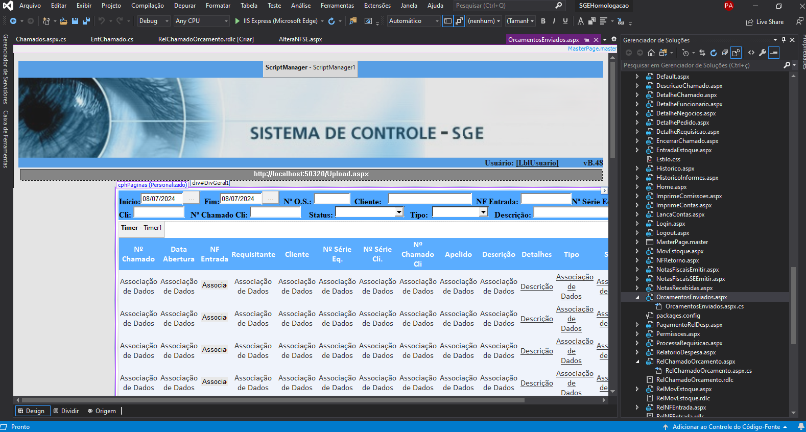
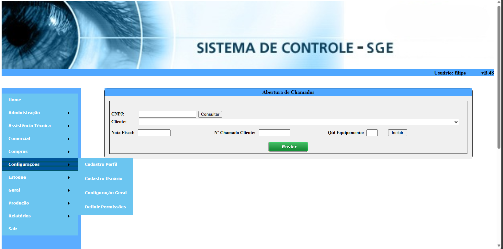
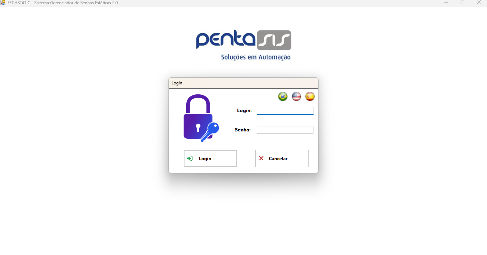
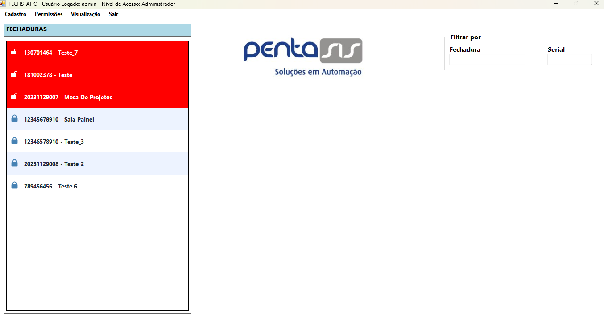
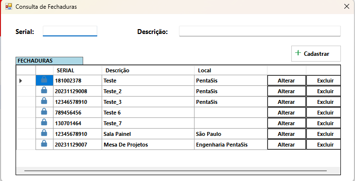
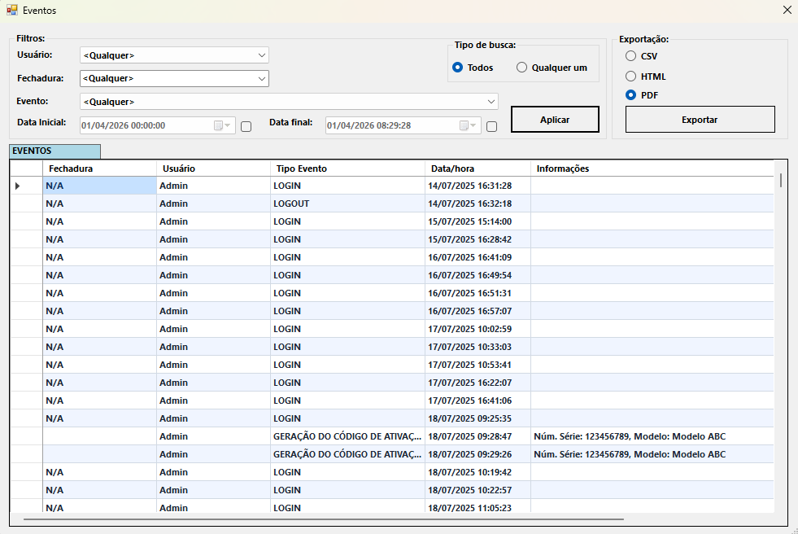
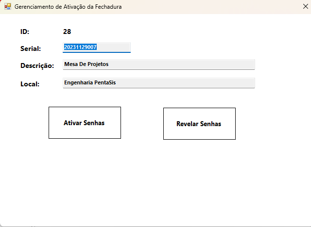
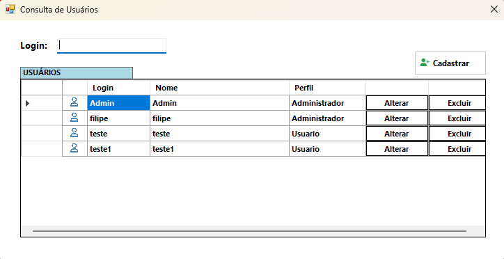
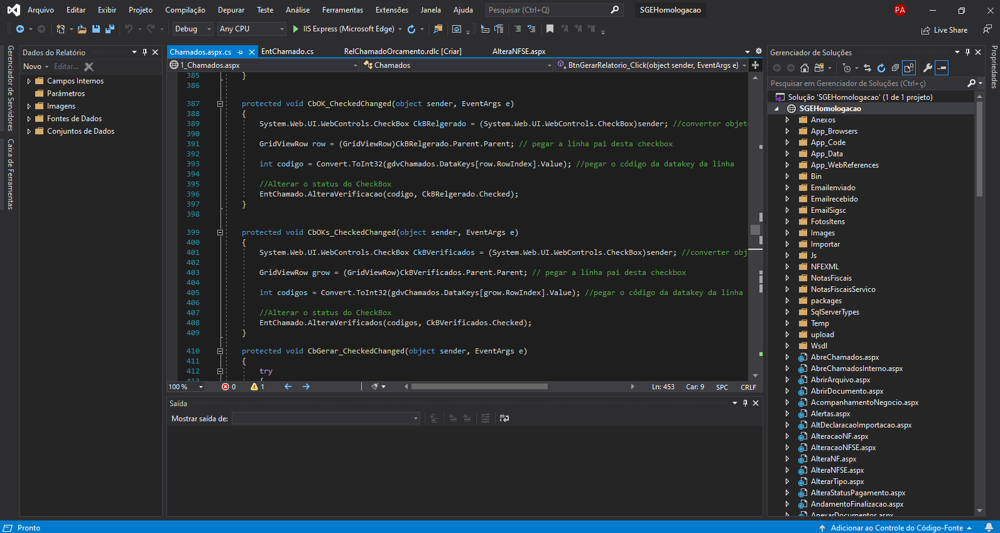

Manutenção, melhoria contínua e suporte técnico em sistemas C# e ERPs empresariais.

Suporte a um sistema ERP em pequena empresa, garantindo que os processos administrativos, financeiros e operacionais funcionem de forma integrada e eficiente.

Resolução de problemas, implementação de melhorias e adaptação do sistema às necessidades do negócio — contribuindo para a otimização dos processos internos.






Desenvolvimento de novas funcionalidades e aprimoramento de módulos existentes, evoluindo o sistema conforme as necessidades do negócio e garantindo a entrega contínua de valor.
"Profissional especializado em sustentação de software, com foco em garantir a estabilidade, eficiência e evolução contínua de sistemas. Experiência em análise de problemas, manutenção corretiva e suporte técnico, sempre buscando soluções ágeis e eficazes."

Identificação e correção de problemas, implementação de melhorias, atualização de tecnologias e garantia de que as soluções atendam às necessidades dos usuários.